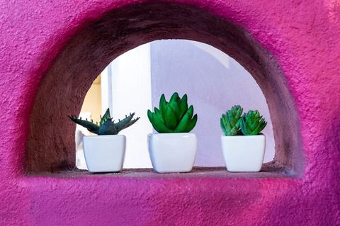
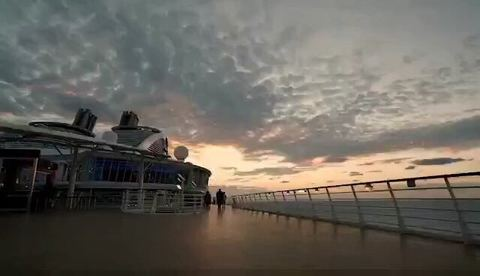

塞班岛 · 2018.12.14 – 2018.12.25
塞班航拍+星空
又一次来到塞班，用单反和GoPro都拍过塞班，不太满意，总感觉海的颜色还原不出来，这次尝试用无人机拍拍………
20 张照片 →
广西·北海 · 2018.12.01 – 2018.12.04
北海涠洲岛一日还
北海金海湾红树林有两个品种，白骨壤和秋茄，种子落在滩涂地上三小时生根发芽，落在海水里就是种子爱旅行了……
9 张照片 →
台北 · 2018.11.17 – 2018.11.18
One night in Taipei 我留下许多情
预约参观摩耶精舍的时间未到，等候的30分钟，有人运动有人阅读有人观察，色即是空所见未必是真实的………
27 张照片 →
加勒比·邮轮 · 2018.09.08 – 2018.09.23
海洋魅丽号东西加勒比，换个角度看你
之前加勒比对我来说只能算是一个符号，或者是一个邮轮公司的名字，我因为加勒比而了解邮轮，但也因为加勒比对远方产生了莫名的好奇。这是一次临时决定的旅行，因为看到有一个关于西加勒比的线路，但是报不上名了，所以就决定自己动手来个自由行。…
147 张照片 →
邮轮·MSC辉煌号 · 2018.09.01 – 2018.09.05
MSC地中海辉煌号一期一会
一期一会(いちごいちえ)是由日本茶道发展而来的词语。在茶道里，指表演茶道的人会在心里怀着“难得一面，世当珍惜”的心情来诚心礼遇面前每一位来品茶的客人。人的一生中可能只能够和对方见面一次，因而要以最好的方式对待对方。这样的心境中也包含着日本传…
68 张照片 →
韩国·首尔/光州 · 2018.03.19 – 2018.03.21
首尔光州的文创旅行
36 张照片 →
福建·客家土楼 · 2018.03.07 – 2018.03.12
美国间谍卫星发现了客家土楼
17 张照片 →
延时摄影 · 2018.01.01 – 2018.12.28
时间旅行，缘起性空
延时摄影是以一种将时间压缩的拍摄技术，是将一组照片或视频把几分钟、几小时甚至是几天几年的过程压缩在一个较短的时间内以视频方式播放。 拍延时不能着急，不仅是技术上的要求，更是磨练心性的过程，同时延时最后呈现出来的不仅仅是事物本身的样子，还…
16 张照片 →